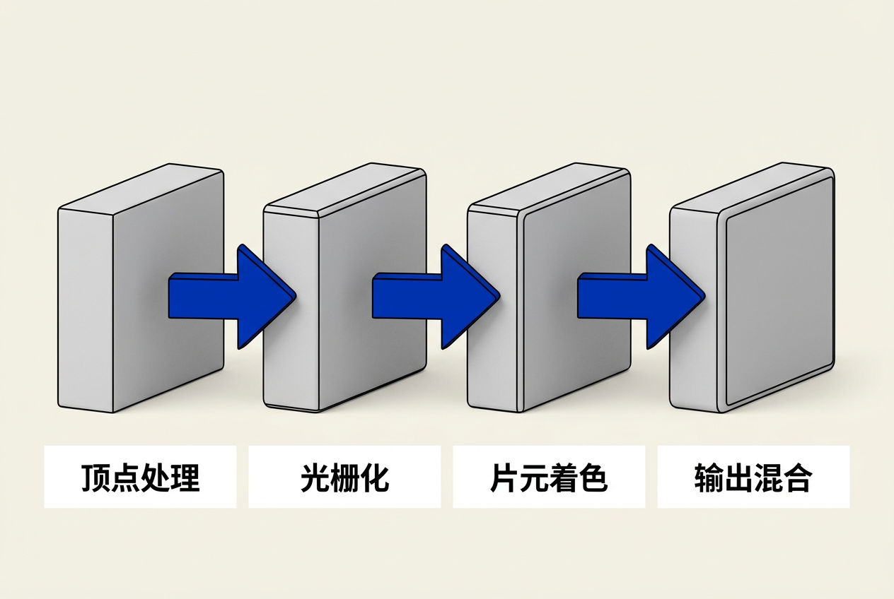
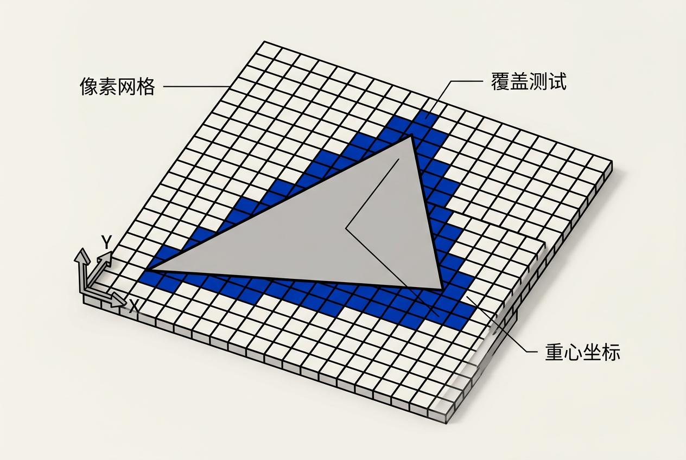
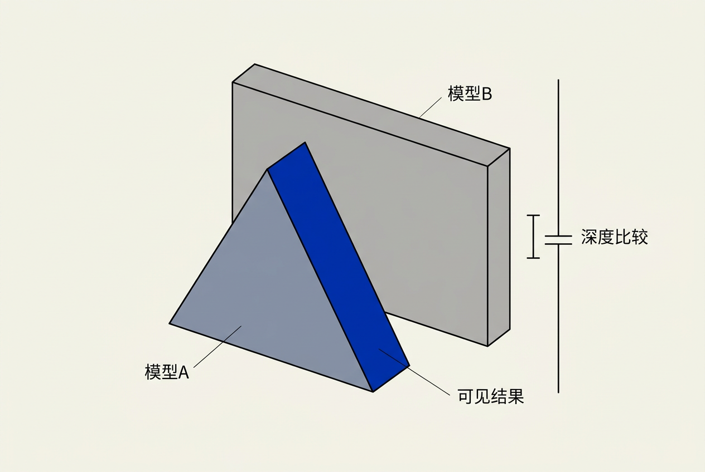
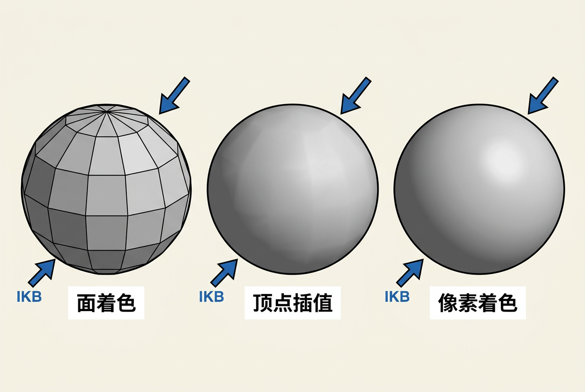

第9章：图形管线 — 零基础讲义
讲义说明
本讲义基于 Steve Marschner & Peter Shirley 所著《虎书5》第5版第9章（p.177-195）。
本章是实时渲染的"施工图"——它告诉你现代 GPU 到底是怎么一步步把 3D 物体画到屏幕上的。
学完本章，你将真正理解光栅化（rasterization）这个图形学的核心技术。
本版插画采用 Guizang 材质插画风格重新绘制。
学习目标
- 理解图形管线的 4 个阶段——顶点处理、光栅化、片元处理、混合
- 掌握中点算法（Midpoint Algorithm）——画线的核心算法
- 理解三角形的栅格化——重心坐标 + Gouraud 插值
- 掌握透视正确的插值——为什么直接插值 (u, v) 是错的
- 理解裁剪（Clipping）——为什么要在投影变换前后都做
- 掌握z-Buffer 算法——隐藏面消除的工业标准
9.1 光栅化（Rasterization）
9.1.1 图形管线的 4 个阶段
核心洞察：所有实时渲染（游戏、UI、AR/VR）都遵循同一个"流水线"：

4 个阶段的核心职责：
| 阶段 | 输入 | 输出 | 主要操作 |
|---|---|---|---|
| 顶点处理 | 顶点坐标 | 屏幕空间顶点 | 矩阵变换（MVP） |
| 光栅化 | 屏幕空间三角形 | 片元（像素） | "哪些像素被三角形覆盖" |
| 片元处理 | 片元 | 处理后片元 | 着色、纹理采样 |
| 混合 | 多个片元 | 最终颜色 | 深度测试、Alpha 混合 |
核心洞察：光栅化是管线的"心脏"——它把"连续的三角形"转换为"离散的像素"。这一步是实时渲染和光线追踪的核心区别：光线追踪每个像素独立处理（图像顺序），光栅化每个三角形独立处理（物体顺序）。
9.1.2 画线算法（Line Drawing）
画线 = "在像素网格上画一条尽可能直的直线"
直线的隐式方程：
核心思想：
- 直线的"一侧" f(x, y) > 0
- 直线的"另一侧" f(x, y) < 0
- 直线上的点 f(x, y) = 0
9.1.3 中点算法（Midpoint Algorithm）
中点算法 = "决定下一个像素在 y+1 还是 y"的高效算法
核心思想：
当前像素 (x, y)
候选像素 (x+1, y) 和 (x+1, y+1)
中点 = (x+1, y+0.5)
如果 f(中点) < 0 → 直线在 x+1, y 之上 → 选 (x+1, y+1)
否则 → 选 (x+1, y)算法伪代码：
function midpoint_line(x₀, y₀, x₁, y₁):
y = y₀
for x in range(x₀, x₁):
drawpixel(x, y)
if f(x+1, y+0.5) < 0:
y = y + 1核心洞察：增量算法只用了"加法"——避免了乘法。这让 Bresenham 算法（1965年！）至今仍在使用。
9.1.4 三角形的栅格化（Triangle Rasterization）
三角形的栅格化 = "哪些像素被三角形覆盖"

重心坐标插值：
对三角形顶点 p₀, p₁, p₂ 和颜色 c₀, c₁, c₂
重心坐标 (α, β, γ) = 内部点的三角形面积比例
像素颜色 c = α·c₀ + β·c₁ + γ·c₂Gouraud 插值 = 在三角形内部线性插值颜色（在屏幕空间）。
算法步骤：
# 计算包围盒
xmin = floor(x₀); xmax = ceil(x₁)
ymin = floor(y₀); ymax = ceil(y₁)
for y in range(ymin, ymax+1):
for x in range(xmin, xmax+1):
# 计算重心坐标
α = f₁₂(x, y) / f₁₂(x₀, y₀)
β = f₂₀(x, y) / f₂₀(x₁, y₁)
γ = f₀₁(x, y) / f₀₁(x₂, y₂)
if α > 0 and β > 0 and γ > 0:
c = α·c₀ + β·c₁ + γ·c₂
drawpixel(x, y, c)9.1.5 透视正确的插值（Perspective Correct Interpolation）
核心陷阱：直接用屏幕空间的 (α, β, γ) 插值纹理坐标 (u, v) 是错误的！
为什么？
3D 空间中等间距的网格 → 屏幕空间中等间距的网格（近大远小）→ 但屏幕空间的"等间距"在 3D 空间不等间距！
实际做法：把所有插值量当作"齐次坐标"——插值 u, v, w 也插值，最后再做透视除法。
# 三个顶点的齐次插值
u_s = α(u₀/w₀) + β(u₁/w₁) + γ(u₂/w₂)
v_s = α(v₀/w₀) + β(v₁/w₁) + γ(v₂/w₂)
1_s = α(1/w₀) + β(1/w₁) + γ(1/w₂)
# 透视除法
u = u_s / 1_s
v = v_s / 1_s核心洞察：插值 w 然后再除 = 透视正确。这让远处的纹理保持"看起来对"——这是 3D 渲染不会变形的关键。
9.1.6 裁剪（Clipping）
裁剪 = "把视体外的部分切掉"
透视投影会把 "z = 0"（视点平面）映射到 z = ±∞。如果三角形的一部分在视点之后（z > 0），透视除法会出现除以 0 的情况！
| 方式 | 优点 | 缺点 |
|---|---|---|
| 视体前裁剪（用 6 个平面） | 三角形完全在视体中，透视除法安全 | 需要 6 次平面对每个三角形 |
| 齐次坐标裁剪（用 6 个 4D 平面） | 一次齐次除法，4D 平面简单 | 透视除法后才真正安全 |
9.2 光栅化前后的操作
9.2.1 最简单的 2D 渲染管线
2D 渲染 = 顶点处理（不做事）+ 光栅化 + 片元处理（用顶点颜色）+ 混合（覆盖）
9.2.2 最小 3D 渲染管线
3D 渲染 = 顶点处理（MVP 变换）+ 光栅化 + 片元处理 + 混合
问题：3D 物体的"深度顺序"怎么办？
- 画家算法：先画远的，再画近的。但有循环遮挡时无法处理！
- z-Buffer：每个像素存一个深度值，只保留最近的像素
9.2.3 z-Buffer 算法（工业标准）
z-Buffer = "每个像素存一个深度值 + 深度测试"

# 初始化
zbuffer[每个像素] = ∞
# 对每个三角形
for each pixel (x, y) in triangle:
z = 插值深度(x, y)
if z < zbuffer[x, y]:
zbuffer[x, y] = z
color_buffer[x, y] = 像素颜色核心洞察：z-Buffer 是无敌的——它不依赖任何排序，对任何几何形状都有效。所有现代 GPU 都用 z-Buffer（或它的变种）。
z-Buffer 的精度问题：
- 整数存储比 float 更快，但精度有限
- 靠近 near plane 的精度高，靠近 far plane 的精度低
- z-fighting：当两个三角形几乎在同一深度时，可能出现"闪烁"
9.3 完整渲染管线
9.3.1 着色频率对比
面着色（Flat Shading）、顶点插值（Gouraud Shading）和像素着色（Phong Shading）是三种不同粒度的着色方式，效果和性能依次递进。

| 着色方式 | 粒度 | 性能 | 效果 |
|---|---|---|---|
| 面着色 | 每个三角形一个颜色 | 最快 | 有明显棱角 |
| 顶点插值 | 每个顶点一个颜色，内部线性插值 | 中等 | 平滑渐变 |
| 像素着色 | 每个像素独立计算 | 最慢 | 最逼真 |
9.3.2 完整流程代码
// 顶点着色器（Vertex Shader）
vec4 p_world = M_model * vec4(position, 1.0);
vec4 p_camera = M_view * p_world;
vec4 p_clip = M_proj * p_camera;
// 裁剪（Clipping）—— 4 个齐次平面
if (!is_inside_view_volume(p_clip)) discard;
// 光栅化（Rasterization）—— 找覆盖的像素
for each pixel (x_s, y_s) in triangle:
// 透视除法（Perspective Division）
vec3 p_ndc = p_clip.xyz / p_clip.w;
// 视口变换（Viewport Transform）
vec2 p_screen = (p_ndc.xy + 1.0) * 0.5 * viewport_size;
// 片元着色器（Fragment Shader）
vec3 color = compute_lighting(p_world, normal, ...);
// 深度测试（Depth Test）
if (p_ndc.z < z_buffer[x_s, y_s]):
z_buffer[x_s, y_s] = p_ndc.z;
color_buffer[x_s, y_s] = color;9.3.3 GPU 硬件化
| 阶段 | GPU 硬件 | 是否可编程 |
|---|---|---|
| 顶点处理 | Vertex Shader | ✅ GLSL/HLSL |
| 光栅化 | Rasterizer | ❌ 固定功能 |
| 片元处理 | Fragment Shader | ✅ GLSL/HLSL |
| 混合 | Output Merger | 部分可编程 |
关键洞察：光栅化是固定功能——硬件直接实现。但顶点/片元是可编程的——你可以写自己的着色器。这就是为什么现代游戏能实现各种视觉效果。
9.4 实用考虑
9.4.1 性能优化
1. 早期 z 测试（Early Z）：在片元着色器之前做深度测试，节省大量 GPU 计算。
if (z > z_buffer[x, y]) discard; // 节省片元着色器调用2. 三角形排序：虽然 z-Buffer 不需要排序，但透明物体需要从后往前画。
3. 视锥体剔除（Frustum Culling）：在 CPU 端剔除整个不在视体内的物体，节省 GPU 时间。
9.4.2 抗锯齿（Anti-Aliasing）
问题：三角形边缘的"锯齿"是光栅化的固有问题（像素是离散的）。
| 技术 | 原理 | 性能 |
|---|---|---|
| SSAA | 渲染 4×4 像素，最后平均 | 最慢 |
| MSAA | 每个像素有多个子样本，只着色一次 | 中等 |
| FXAA / TAA | 后处理抗锯齿 | 最快 |
9.4.3 为什么是三角形？
- 永远平面：3 个点确定一个平面
- 简单求交：光线-三角形求交是图形学的核心算法
- 插值简单：重心坐标线性插值
- GPU 优化：硬件直接支持三角形栅格化
全章总结
讲义核心洞察：图形管线是实时渲染的"施工图"——
- 4 个阶段：顶点处理 → 光栅化 → 片元处理 → 混合
- 光栅化的核心：把"连续的三角形"变成"离散的像素"
- 透视正确的插值：插值齐次坐标后做透视除法
- 裁剪：在齐次坐标中（4D 平面），而不是世界坐标
- z-Buffer：工业标准的隐藏面消除算法
关键公式速查：
下一步：第 10 章将讲解信号处理基础——理解"采样、滤波、混叠"等图形学基础概念。